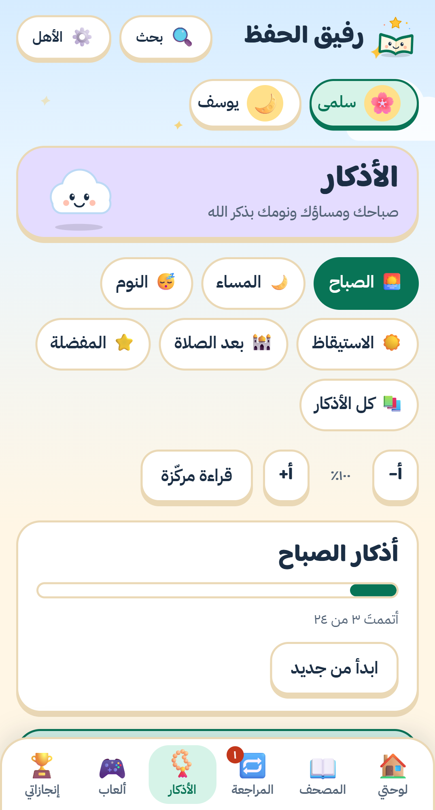
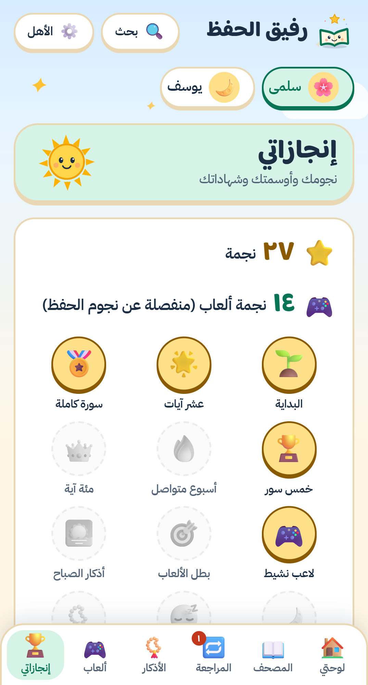

رفيق الحفظ
احفظ القرآن خطوة بخطوة

لكل طفل ملفه ونجومه
وصديقه المفضّل من الشخصيات


علّم ما حفظتَ آية بآية
وتابع رحلتك في كل سورة

وضع التسميع
اقرأ من حفظك ثم تحقّق

مراجعة متباعدة في موعدها

الأذكار كلها
صباح ومساء ونوم، مع عدّاد لكل ذكر

استمع بصوت قارئك
وكرّر الآية كما تشاء

ألعاب وأوسمة ونجوم


ابدأ الحفظ اليوم
بدون حسابات · بياناتك على جهازك